How should the episodes look?
كيف تظهر الحلقات؟
Open each one on your phone and try it.افتح كل واحدة على جوالك وجرّبها.
A · Swipe
The live site · الموقع الحالي
Swipe sideways from one episode to the next. Newest first.
اسحب يمين ويسار من حلقة إلى حلقة. الأحدث أولًا.
B · FeedOne episode fills the screen. Scroll up for the next, like Shorts.
كل حلقة تملأ الشاشة. اسحب للأعلى للحلقة التالية، مثل الشورتس.
C · Latest + EarlierThe newest episode big on top, older ones in a short list below.
أحدث حلقة كبيرة في الأعلى، والحلقات السابقة في قائمة قصيرة تحتها.